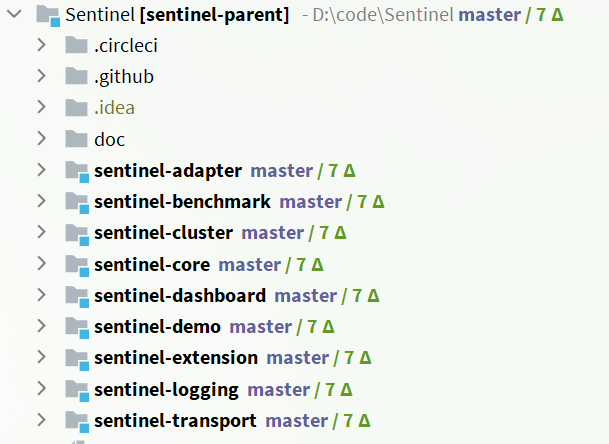
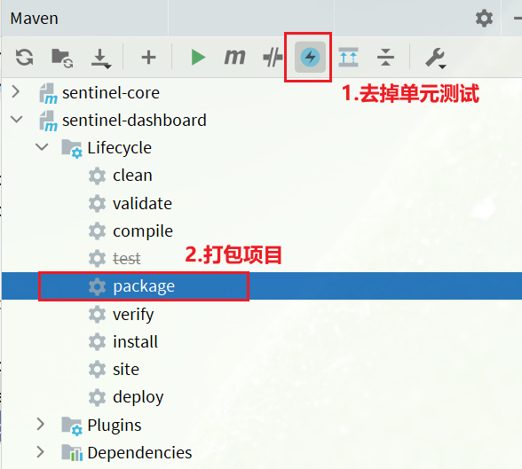

微服务保护：sentinel规则持久化
Sentinel 规则持久化
一、修改order-service服务
修改OrderService，让其监听Nacos中的sentinel规则配置。
具体步骤如下：
1.引入依赖
在order-service中引入sentinel监听nacos的依赖：
1 | <dependency> |
2.配置nacos地址
在order-service中的application.yml文件配置nacos地址及监听的配置信息：加的是datasource往下的内容。
1 | spring: |
dataId指定了nacos的存储的配置文件，在后续跑sentinel的四个功能的时候，nacos会自动添加这个配置的
二、修改sentinel-dashboard源码
SentinelDashboard默认不支持nacos的持久化，需要修改源码。
1. 下载源码包并解压
1 | # github地址，版本自选 |
解压sentinel源码包：

然后并用IDEA打开这个项目，结构如下：

2. 修改nacos依赖
在sentinel-dashboard源码的pom文件中，nacos的依赖默认的scope是test，只能在测试时使用，这里要去除：

将sentinel-datasource-nacos依赖的scope去掉：
1 | <dependency> |
3. 添加nacos支持
在sentinel-dashboard的test包下，已经编写了对nacos的支持，我们需要将其拷贝到main下。

4. 修改nacos地址
然后，还需要修改测试代码中的NacosConfig类：

修改其中的nacos地址，让其读取application.properties中的配置：

在sentinel-dashboard的application.properties中添加nacos地址配置：
1 | nacos.addr=localhost:8848 |
5. 配置nacos数据源
另外，还需要修改com.alibaba.csp.sentinel.dashboard.controller.v2包下的FlowControllerV2类：
让我们添加的Nacos数据源生效：

6. 修改前端页面
接下来，还要修改前端页面，添加一个支持nacos的菜单。
修改src/main/webapp/resources/app/scripts/directives/sidebar/目录下的sidebar.html文件：

将其中的这部分注释打开：

修改其中的文本：

7. 重新编译、打包项目
运行IDEA中的maven插件，编译和打包修改好的Sentinel-Dashboard：

8.启动
启动方式跟官方一样：
1 | java -jar sentinel-dashboard.jar |
如果要修改nacos地址，需要添加参数：
1 | java -jar -Dnacos.addr=localhost:8848 sentinel-dashboard.jar |